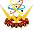
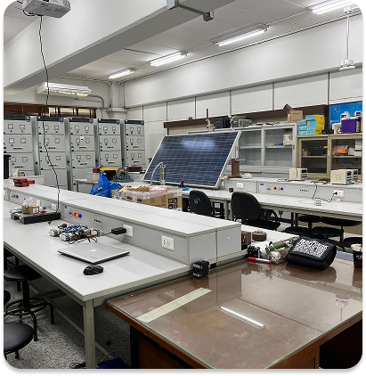
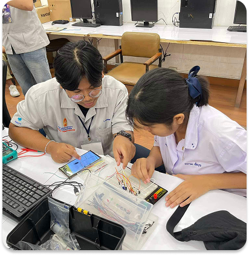

สาขาวิชาครุศาสตร์ไฟฟ้า
Electrical Technology Education



เกี่ยวกับสาขา
หลักสูตรมุ่งผลิตครูผู้สอนสายวิศวกรรม และนักฝึกอบรมในภาคอุตสาหกรรม ที่มีความรู้ ความสามารถและความเชี่ยวชาญ ทั้งด้านทฤษฎีและปฏิบัติ โดยเน้นความเข้มแข็งทางวิศวกรรมไฟฟ้าในสาขาวิชาไฟฟ้ากำลัง สาขาอิเล็กทรอนิกส์ และสาขาคอมพิวเตอร์ บัณฑิตจะได้รับการพัฒนาให้มีทักษะด้านการสอนและการถ่ายทอดความรู้อย่างเป็นระบบ สามารถออกแบบการเรียนรู้ทั้งภาคทฤษฎีและภาคปฏิบัติได้อย่างมีประสิทธิภาพ พร้อมทั้งมีทัศนคติที่ดีและจิตสำนึกแห่งความเป็นครู
หลักสูตรที่เปิดสอน (ปริญญาตรี)
● ปริญญาตรี เทคโนโลยีบัณฑิต (ทล.บ.) 4 ปี
- สาขาเทคโนโลยีไฟฟ้า
● ปริญญาตรี ครุศาสตร์อุตสาหกรรมบัณฑิต (ค.อ.บ.) 5 ปี
- สาขาครุศาสตร์ไฟฟ้า (เอกไฟฟ้ากำลัง)
- สาขาครุศาสตร์ไฟฟ้า (เอกคอมพิวเตอร์)
- สาขาครุศาสตร์ไฟฟ้า (เอกอิเล็กทรอนิกส์ระบบอัจฉริยะ)